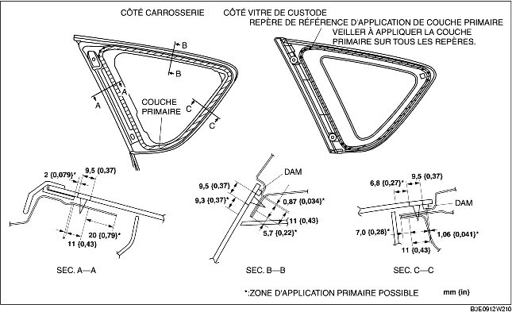

1. Découper l'ancien produit d'étanchéité à l'aide d'une lame de rasoir en veillant à laisser une épaisseur de 1-2 mm {0,04-0,07 in} sur tout le pourtour du cadre.
2. Si, à certains endroits, la totalité du produit a été enlevée, appliquer une couche d'apprêt après avoir dégraissé la surface à enduire, et laisser sécher pendant environ 30 minutes. Puis appliquer une couche de produit d'étanchéité de 2 mm {0,08 in} d'épaisseur.
3. Nettoyer et dégraisser une bande d'environ 50 mm {2,0 in} de largeur sur tout le pourtour de la vitre et de la surface d'adhérence de la carrosserie.
4. Reposer la moulure le long du pourtour de la vitre.
5. N'utiliser qu'une couche d'apprêt pour verre sur la vitre de custode, et une couche d'apprêt pour carrosserie sur la carrosserie, puis laisser sécher pendant approx. 30 minutes.

6. Appliquer du produit d'étanchéité sur la surface de la vitre comme l'indique la figure.
7. Insérer les goupilles de fixation et l'élément de fixation sur la carrosserie, et reposer le vitre de custode.
8. Appuyer sur les zones de fixation des goupilles situées sur la vitre de custode, afin de permettre au languettes des goupilles de s'enclencher dans la carrosserie.
9. Reposer les pièces suivantes :
10. Laisser le produit d'étanchéité sécher complètement.